Introduction to CausalVerse
Mike Nguyen
2026-03-22
a_introduction.Rmd
library(causalverse)
Introduction to the causalverse Package
Welcome to the causalverse package - a dedicated toolkit tailored for researchers embarking on causal inference analyses. Our primary mission is to simplify and enhance the research process by offering robust tools specifically designed for various causal inference methodologies.
Core Packages (Auto-Attached)
Just like tidyverse, loading library(causalverse) automatically attaches these core packages — no need to load them individually:
- ggplot2 — plotting
- dplyr — data manipulation
- tidyr — data tidying
- purrr — functional programming
-
magrittr — pipe operator (
%>%) - data.table — fast data operations
- fixest — fast fixed-effects estimation
- rio — universal data import/export
For method-specific backend packages (e.g., synthdid, MatchIt, rdrobust), you still need to load them individually or install them via install_backends().
Vignettes Overview
To enable a comprehensive understanding of each causal inference method, causalverse boasts a series of in-depth vignettes. Each vignette offers a blend of theoretical background and hands-on demonstrations, ensuring you have both the knowledge and skills to implement each method effectively.
Here’s a snapshot of our method-specific vignettes:
Randomized Control Trials (RCT): The gold standard of experimental research. Covers balance checking, treatment effect estimation, heterogeneous effects, and power analysis.
Regression Discontinuity (RD): Sharp and fuzzy RD designs, manipulation testing, and bounds analysis with
rdbounds.Synthetic Difference-in-Differences (SynthDID): The method by Arkhangelsky et al. (2021) combining synthetic controls with DID, including staggered adoption and multiple estimators.
Difference in Differences (DID): Traditional and modern DID approaches including PanelMatch, Callaway & Sant’Anna, and stacked DID.
Synthetic Controls (SC): The Abadie et al. (2010) method for comparative case studies, with ridge-regularized and de-meaned variants.
Instrumental Variables (IV): Two-stage least squares estimation, weak instrument diagnostics, and IV with fixed effects.
Event Studies - Finance (EV): Finance event studies measuring abnormal stock returns around corporate events (M&A, earnings announcements, etc.), including CAR, BHAR, and factor models. Note: econometric event studies (dynamic treatment effects, pre-trends) are covered in the DID vignette.
Matching Methods: Propensity score matching, coarsened exact matching, entropy balancing, and comprehensive balance diagnostics.
Sensitivity Analysis and Robustness: Omitted variable bias sensitivity, Rosenbaum bounds, specification curves, placebo tests, and multiple testing corrections.
A Note on Methodologies
The majority of methods covered in causalverse pertain to quasi-experimental approaches, typically applied to observational data. These methods are instrumental in scenarios where running randomized experiments might be infeasible, unethical, or costly. However, we also touch upon experimental methods, specifically RCTs, recognizing their unparalleled significance in establishing causal relationships.
Getting Started
As you embark on your journey with causalverse, we recommend starting with this introductory vignette to familiarize yourself with the package’s architecture and offerings. Then, delve into the method-specific vignettes that align with your research objectives or peruse them all for a holistic understanding.
Happy causal inferencing!
Reporting
In this section, the focus is primarily on reporting rather than causal inference. Given that my primary domain of interest is marketing, I adhere to the American Marketing Association’s style guidelines for presentation. As a result, my plots typically align with the AMA theme. However, users always retain the flexibility to modify the theme as needed.
The ama_theme function is designed to provide a custom theme for ggplot2 plots that align with the styling guidelines of the American Marketing Association.
Figures
This is a direct quote from AMA website (emphasis is mine)
Figures should be placed within the text rather than at the end of the document.
Figures should be numbered consecutively in the order in which they are first mentioned in the text. The term “figure” refers to a variety of material, including line drawings, maps, charts, graphs, diagrams, photos, and screenshots, among others.
Figures should have titles that reflect the take-away. For example, “Factors That Impact Ad Recall” or “Inattention Can Increase Brand Switching” are more effective than “Study 1: Results.”
Use Arial font in figures whenever possible.
For graphs, label both vertical and horizontal axes.
Axis labels in graphs should use “Headline-Style Capitalization.”
Legends in graphs should use “Sentence-style capitalization.”
All bar graphs should include error bars where applicable.
Place all calibration tick marks as well as the values outside of the axis lines.
Refer to figures in text by number (see Figure 1). Avoid using “above” or “below.”
The cost of color printing is borne by the authors. If you do not intend to pay for color printing for a figure that contains color, then it will automatically appear in grayscale in print and in color online.
If you submit artwork in color and do not intend to pay for color printing, please make sure that the colors you use will work well when converted to grayscale, and avoid referring to color in the text (e.g., avoid “the red line in Figure 1”). Use contrasting colors with different tones (i.e., dark blue and dark red will convert into almost identical shades of gray). Don’t use light shades or colors such as yellow against a light background.
When using color in figures, avoid using color combinations that could be difficult for people with color vision deficiency to distinguish, especially red-green and blue-purple. Many apps are available online (search for “colorblindness simulator” or similar terms) to provide guidance on likely issues. Use symbols, words, shading, etc. instead of color to distinguish parts of a figure when needed. Avoid wording such as “the red line in Figure 1.”
When preparing grayscale figures, use gray levels between 20% and 80%, with at least 20% difference between the levels of gray. Whenever possible, avoid using patterns of hatching instead of grays to differentiate between areas of a figure. Grayscale files should not contain any color objects.
When reporting the results from an experiment in a figure:
Use the full scale range on the y-axis (e.g., 1–7).
Include error bars and specify in the figure notes what they represent (e.g., ±1 SE).
Include the means.
Include significance levels with asterisks.
Upon acceptance: Submit original Excel or PowerPoint files for all figures, not just a graphic pasted into Excel, PowerPoint, or Word. This is so the production staff can edit the content. We also accept PDF, EPS, or PostScript files made from the application that created the original figure if it was not created in Word or PowerPoint. Specifically, please export (rather than save) the file from the original application. Avoid bitmap or TIFF files. However, when these files must be used—as in photographs or screenshots—submit print-quality graphics. For a photograph or screenshot, this requires a resolution of at least 300 ppi/dpi. For a line drawing or chart, the resolution should be at least 800 ppi/dpi.
Functions Overview
-
ama_theme(): Provides the primary AMA plot theme. -
ama_labs(): Customizes the labels in AMA style. -
ama_scale_fill(): Provides a color or grayscale fill based on the AMA style. -
ama_scale_color(): Provides a color or grayscale color aesthetic based on the AMA style.
Let’s start by plotting a simple scatter plot:
data(mtcars)
p <- ggplot(mtcars, aes(x = mpg, y = wt)) +
geom_point() +
ama_theme()
p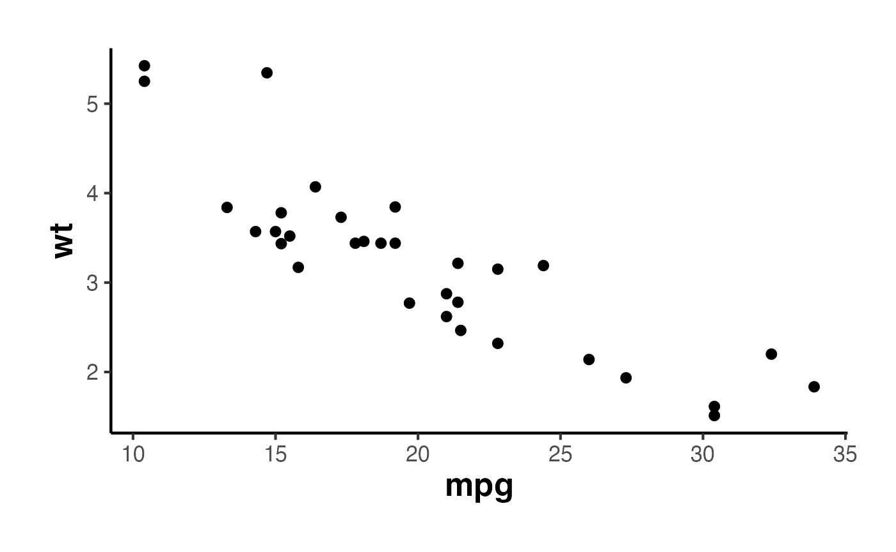
Using the ama_labs() function, you can ensure the capitalization and formatting of your plot labels match the AMA style:
p + ama_labs(
x = "miles per gallon",
y = "weight",
title = "mpg vs weight in mtcars dataset",
subtitle = "a scatter plot representation",
caption = "source: mtcars dataset"
)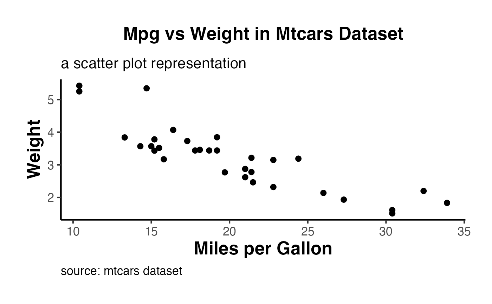
Fill Scales
For plots that use a fill aesthetic, such as bar plots or histograms, you can apply the ama_scale_fill():
p_fill <-
ggplot(mtcars, aes(y = mpg, x = cyl, fill = vs)) +
geom_point() +
ama_theme() +
ama_scale_fill(use_color = F)
p_fill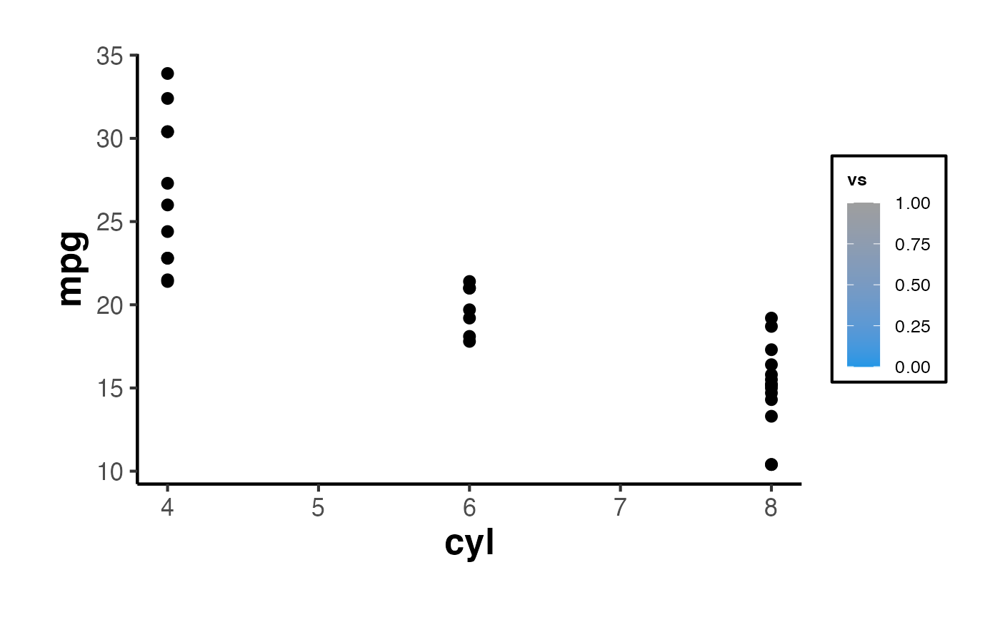
ggplot(mtcars, aes(y = mpg, x = cyl, fill = vs)) +
geom_point() +
ama_theme() +
ama_scale_fill(use_color = T)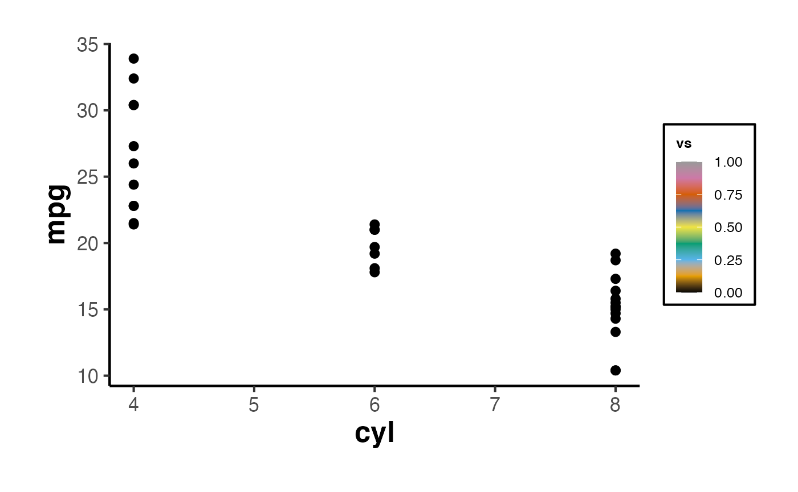
Color Scales
Similarly, for plots using a color aesthetic, you can apply the ama_scale_color():
p_color <- ggplot(mtcars, aes(x = mpg, y = wt, color = hp)) +
geom_point() +
ama_theme() +
ama_scale_color(use_color = TRUE, palette_name = "OkabeIto")
p_color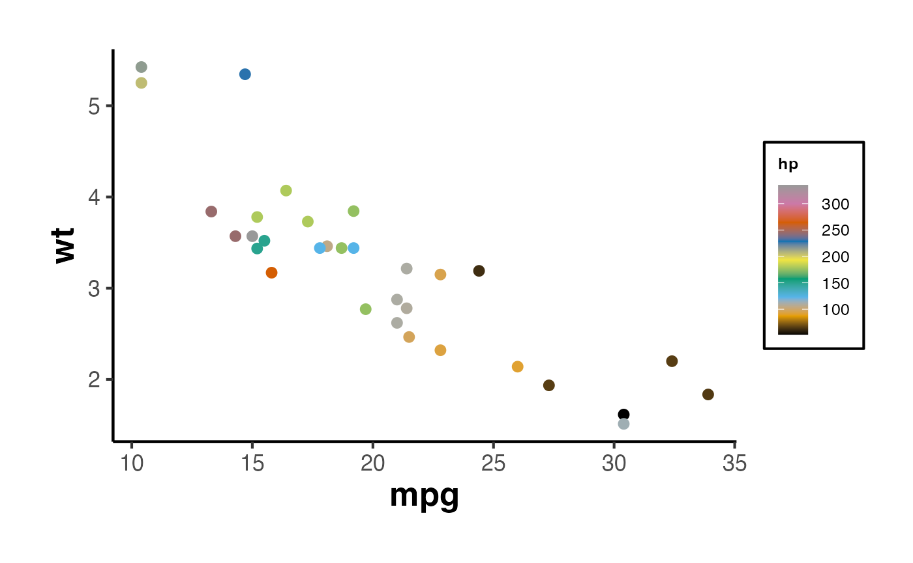
# recommend
p_grey <- ggplot(mtcars, aes(x = mpg, y = wt, color = hp)) +
geom_point() +
ama_theme() +
ama_scale_color(use_color = F)
p_grey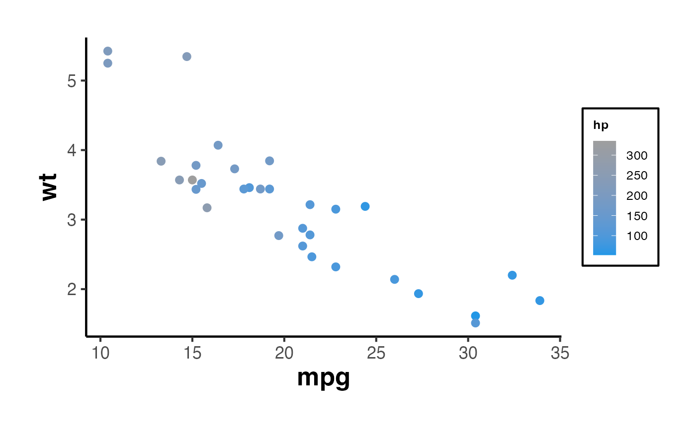
In short,
ggplot(mtcars, aes(x = mpg, y = cyl)) +
geom_point(aes(color = gear, fill = gear), size = 4, shape = 21) +
ama_labs(
x = "x label",
y = "y label",
title = "Plot Title",
subtitle = "subtitle",
caption = "This is my caption/note",
fill = "legend title",
color = "legend title"
) +
ama_scale_fill() +
ama_scale_color() +
ama_theme()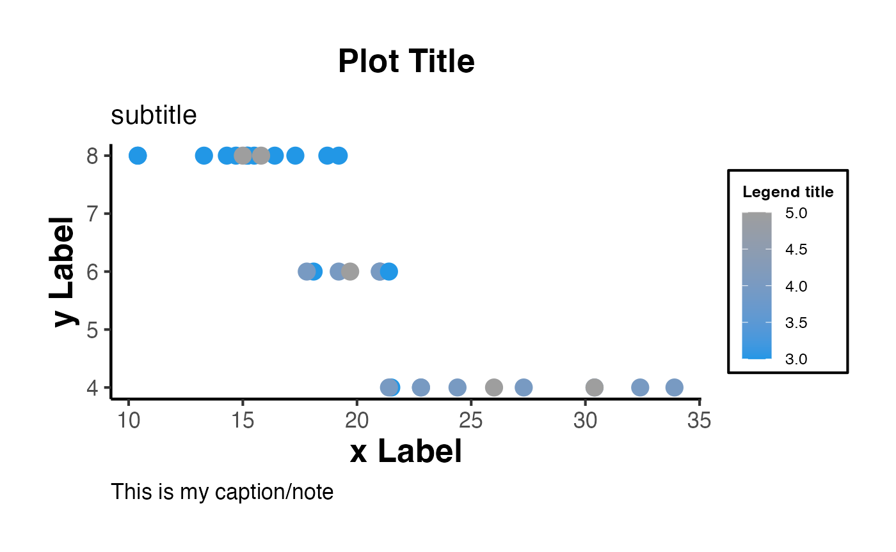
Moreover, the function can inherit all parameters from the theme function, allowing even further customization:
ggplot(mtcars, aes(x = mpg, y = wt)) +
geom_point() +
ama_theme(panel.spacing = unit(1, "lines"))
Export Figures
p_grey |>
causalverse::ama_export_fig(
filename = "p_color",
filepath = file.path(getwd(), "export")
)Tables
Tables should be placed within the text rather than at the end of the document.
Tables should be numbered consecutively in the order in which they are first mentioned in the text.
Tables should have titles that reflect the take-away. For example, “Factors That Impact Ad Recall” or “Inattention Can Increase Brand Switching” are more effective than “Study 1: Results.”
Designate units (e.g., %, $, n) in column headings.
Refer to tables in text by number (see Table 1). Avoid using “above” or “below.”
Asterisks or notes cued by lowercase superscript letters appear at the bottom of the table below the rule. Asterisks are used for p-values, and letters are used for data-specific information. Other descriptive information should be labeled as “Notes:” and placed after the letters.
Tables with text only should be treated in the same manner as tables with numbers (formatted as tables with rows, columns, and individual cells).
Make sure the necessary measures of statistical significance are reported with the table.
Do not insert tables in the Word file as pictures. All tables should be editable in Word.
Export Tables
mtcars |>
nice_tab() |>
head()
#> mpg cyl disp hp drat wt qsec vs am gear carb
#> 1 21.0 6 160 110 3.90 2.62 16.46 0 1 4 4
#> 2 21.0 6 160 110 3.90 2.88 17.02 0 1 4 4
#> 3 22.8 4 108 93 3.85 2.32 18.61 1 1 4 1
#> 4 21.4 6 258 110 3.08 3.21 19.44 1 0 3 1
#> 5 18.7 8 360 175 3.15 3.44 17.02 0 0 3 2
#> 6 18.1 6 225 105 2.76 3.46 20.22 1 0 3 1
mtcars[1:5, 1:5] |>
nice_tab() |>
ama_export_tab(
filename = "test_tab",
filepath = file.path(getwd(), "export")
)Model Free Evidence
Why Visualize Model-Free Evidence?
Often in research, especially in econometrics, public policy, and social sciences, we aim to understand the impact of an intervention or treatment. Typically, a group receiving the treatment (the “treated” group) is compared against a group not receiving it (the “control” group). One of the crucial steps in this analysis is visualizing the trends in both groups over time. Such visualizations, especially when they are presented across different groupings (e.g., industries), provide what is sometimes termed “model-free evidence”. This means the evidence is not reliant on the assumptions of a particular statistical model, making it a robust way to initially understand the data before diving into intricate model-based analyses.
Immediate Visual Feedback: Before we fit complex models to our data, it’s beneficial to see the raw trends. Often, the naked eye can capture nuances that might be missed or misinterpreted by statistical models.
Simplicity for Broader Audience: Not everyone in your audience might be comfortable with intricate statistical details. Simple plots showcasing trends can be understood by a broader audience.
Highlighting Discrepancies: If there are stark differences in trends between the treated and control groups, or if these trends vary across categories like industries, they become immediately evident.
Building Trust in Subsequent Analysis: When we later present model-based results, having first shown the raw trends ensures the audience that the models aren’t capturing spurious patterns.
Using plot_trends_across_group for Model-Free Evidence
The function plot_trends_across_groupis designed to help researchers visualize these trends effortlessly. Users can input their dataset, specify the x-axis, y-axis, grouping variable (like treated/control), and a secondary grouping variable (like industries).
Here’s an example using a fictitious dataset:
# Set random seed for reproducibility
set.seed(123)
# Create the fictitious dataset
n_years <- 20
industries <- c(
# "Tech",
"Healthcare", "Finance", "Retail", "Energy")
data <- expand.grid(industry = industries,
year = 2001:2020,
group = c("treated", "control")) %>%
group_by(industry, year, group) %>%
mutate(
dependent_variable = case_when(
# industry == "Tech" & group == "treated" ~ rnorm(1, 50 + year, 10),
# industry == "Tech" & group == "control" ~ rnorm(1, 40 + year, 10),
industry == "Healthcare" & group == "treated" ~ rnorm(1, 40, 5),
industry == "Healthcare" & group == "control" ~ rnorm(1, 45, 5),
industry == "Finance" & group == "treated" ~ rnorm(1, 60 - year/10, 10),
industry == "Finance" & group == "control" ~ rnorm(1, 65 - year/10, 10),
industry == "Retail" & group == "treated" ~ rnorm(1, 70, 10),
industry == "Retail" & group == "control" ~ rnorm(1, 65, 10),
industry == "Energy" & group == "treated" ~ rnorm(1, 80 - year/20, 5),
industry == "Energy" & group == "control" ~ rnorm(1, 75 - year/20, 5),
TRUE ~ rnorm(1, 50, 10)
),
se = runif(n(), 1, 5) # random standard errors between 1 and 5
)
# Create panel of line plots with grid layout and uncertainty
data %>%
# filter(industry != "Tech") |>
ggplot(aes(x = year, y = dependent_variable, color = group)) +
geom_ribbon(aes(ymin = dependent_variable - se,
ymax = dependent_variable + se, fill = group), alpha = 0.3) +
geom_line() +
facet_wrap(~industry, ncol = 2) +
theme_minimal() +
labs(title = "Dependent Variable across Years by Group and Industry",
x = "Year",
y = "Dependent Variable",
color = "Group",
fill = "Group") +
causalverse::ama_theme()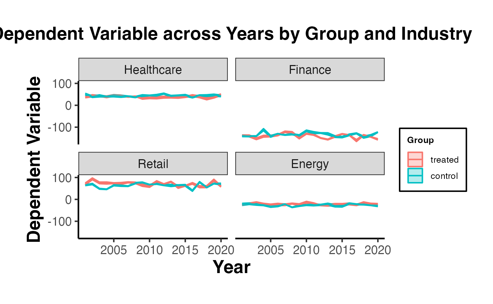
# Example usage
plot <- plot_trends_across_group(
data = data,
x_var = "year",
y_var = "dependent_variable",
grouping_var = "group",
facet_var = "industry",
# se = "se",
include_legend = T,
title = "My Custom Title"
)
print(plot)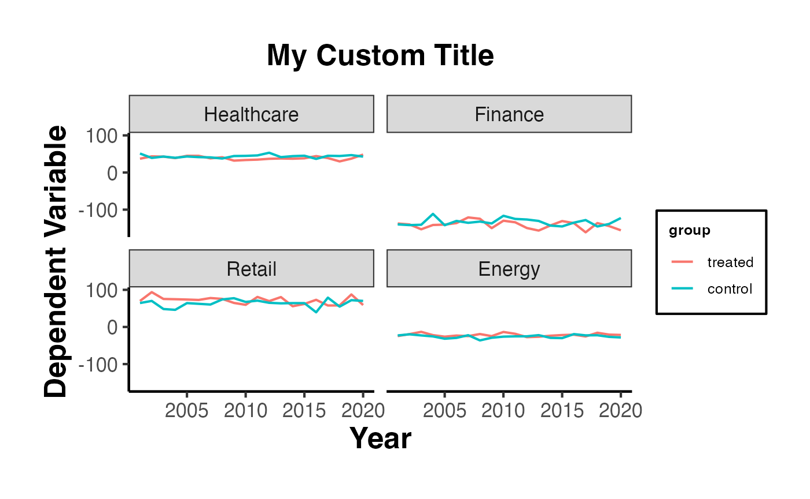
New Utility Functions
In addition to the method-specific vignettes, causalverse provides a growing set of utility functions that automate common research workflows:
Robustness & Diagnostics
-
spec_curve(): Specification curve analysis - runs multiple model specifications and produces a sorted coefficient plot with a panel showing which analytical choices were active. -
bacon_decomp_plot(): Publication-ready scatter plot of the Goodman-Bacon (2021) TWFE decomposition. -
sensitivity_plot(): Plots how treatment effects change under varying degrees of unobserved confounding. -
test_pretrends(): Unified pre-trends testing with joint F-test and optional HonestDiD sensitivity analysis.
Regression Discontinuity
-
rd_bandwidth_sensitivity(): Automated bandwidth sensitivity analysis for RD designs usingrdrobust. -
rd_covariate_balance(): Tests covariate balance at the RD cutoff across multiple covariates. -
rd_placebo_cutoffs(): Falsification test running RD estimation at placebo cutoff values.
Instrumental Variables
-
iv_diagnostic_summary(): One-stop summary table of IV diagnostics (first-stage F, Wu-Hausman, Sargan J-test).
Matching & Propensity Scores
-
plot_pscore_overlap(): Propensity score overlap diagnostic plot with optional trimming thresholds.
Visualization
-
plot_event_coefs(): General-purpose ggplot2 event study coefficient plot accepting output from multiple estimators. -
plot_coef_comparison(): Forest plot comparing treatment effects across models or subgroups. -
compare_estimators(): Formatted comparison table of estimates from diverse causal estimators.
Package Management
-
install_backends(): Install all suggested backend packages at once, or by method category (e.g.,install_backends("did")). -
check_backends(): Check which backend packages are installed and which are missing.
Other Functions
Mediation Analysis
result <- med_ind(a = 0.5, b = 0.7, var_a = 0.04, var_b = 0.05, cov_ab = 0.01)
result$plot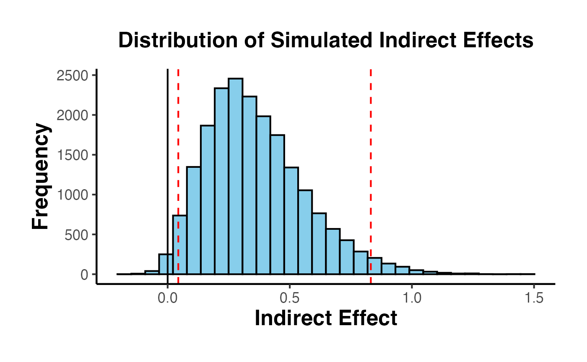
Package Overview: Functions by Method Category
The table below organizes all major causalverse functions by the causal inference method they support.
| Category | Function | Purpose |
|---|---|---|
| Visualization / Reporting | ama_theme() |
AMA-style ggplot2 theme |
ama_labs() |
AMA-compliant plot labels | |
ama_scale_fill() |
AMA fill palette | |
ama_scale_color() |
AMA color palette | |
ama_export_fig() |
Export figures at print resolution | |
ama_export_tab() |
Export tables to Word/LaTeX | |
nice_tab() |
Quick formatted table | |
plot_trends_across_group() |
Model-free evidence panel | |
plot_event_coefs() |
Event study coefficient plot | |
plot_coef_comparison() |
Forest plot across models | |
| DID / TWFE | bacon_decomp_plot() |
Goodman-Bacon decomposition |
did_event_study() |
Dynamic treatment effects | |
test_pretrends() |
Joint pre-trend test + HonestDiD | |
stack_data() |
Stack data for stacked DiD | |
compare_estimators() |
Compare DiD estimators | |
| Synthetic DID | panel_estimate() |
Multi-estimator SDID wrapper |
process_panel_estimate() |
Format SDID results | |
synthdid_est_ate() |
Staggered SDID ATE | |
synthdid_est_per() |
Per-period SDID effects | |
synthdid_plot_ate() |
Plot staggered ATE | |
synthdid_se_placebo() |
Per-period placebo SE | |
synthdid_se_jacknife() |
Per-period jackknife SE | |
sc_gap_plot() |
Gap plot with placebos | |
treatment_calendar() |
Treatment timing heatmap | |
staggered_summary() |
Cohort structure summary | |
| Regression Discontinuity | rd_bandwidth_sensitivity() |
Bandwidth sensitivity |
rd_covariate_balance() |
Balance at cutoff | |
rd_placebo_cutoffs() |
Placebo cutoff test | |
rd_assumption_tests() |
Density and covariate tests | |
| Instrumental Variables | iv_diagnostic_summary() |
First-stage, Wu-Hausman, Sargan |
iv_sensitivity() |
Sensitivity to instrument strength | |
| Matching | plot_pscore_overlap() |
Overlap diagnostic |
love_plot() |
Love plot for covariate balance | |
balance_table() |
Formatted balance table | |
overlap_weights() |
Overlap weighting estimator | |
| Sensitivity | sensitivity_plot() |
Sensitivity to unmeasured confounding |
spec_curve() |
Specification curve analysis | |
placebo_test() |
Generic placebo test | |
| Effect Sizes & Power | effect_size_convert() |
Convert between effect size metrics |
mde_calc() |
Minimum detectable effect | |
did_power_analysis() |
DiD-specific power analysis | |
| Reporting | tidy_causal() |
Tidy estimates from any model |
causal_table() |
Publication regression table | |
covariate_summary() |
Table 1 with SMD | |
| Utilities | install_backends() |
Install suggested packages |
check_backends() |
Check which backends are available | |
get_balanced_panel() |
Enforce balanced panel structure | |
med_ind() |
Mediation indirect effect |
Quick-Start: Three-Line Examples
Below are minimal working examples for the most common causal inference tasks.
# --- DiD: Callaway & Sant'Anna via fixest ---
df_did_qs <- fixest::base_did |>
dplyr::mutate(
treatment = as.integer(if_else(treat == 0, 0, post))
)
feols(y ~ i(period, treat, ref = 4) | id + period,
data = df_did_qs, cluster = ~id) |>
iplot(main = "Quick-start: DiD Event Study (fixest)")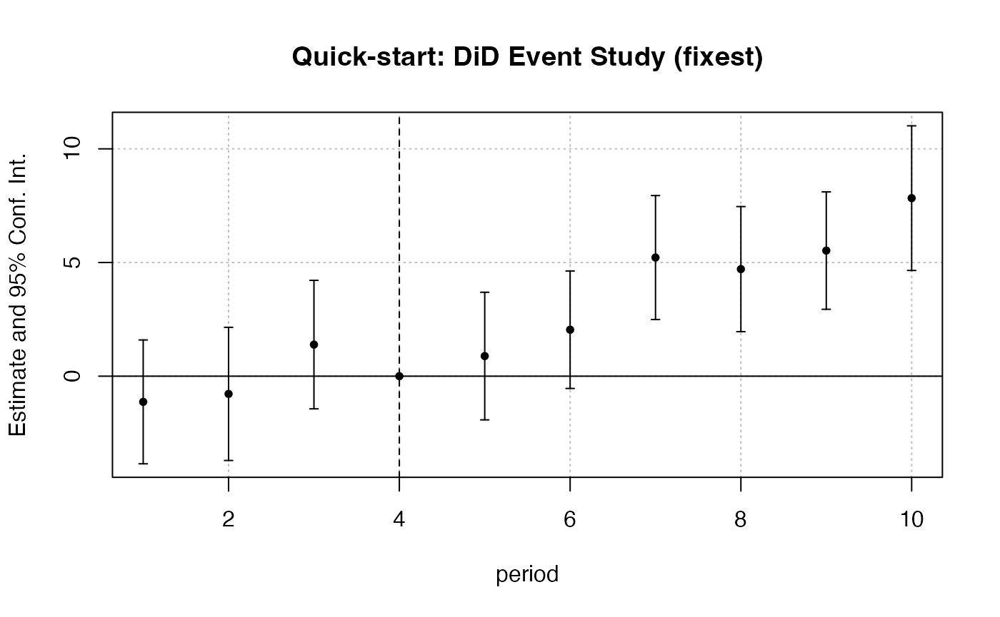
# --- MDE for a DiD design ---
mde_result <- causalverse::mde_calc(n = 500, design = "did", plot = FALSE)
cat("MDE (DiD, n=500):", round(mde_result$mde, 4),
"| Cohen's d:", round(mde_result$mde_std, 4), "\n")
#> MDE (DiD, n=500): 0.3544 | Cohen's d: 0.3544
# --- SynthDID: three lines ---
library(synthdid)
setup_qs <- synthdid::panel.matrices(synthdid::california_prop99)
cat("SynthDID ATT:",
round(as.numeric(synthdid::synthdid_estimate(
setup_qs$Y, setup_qs$N0, setup_qs$T0)), 2), "\n")
#> SynthDID ATT: -15.6Decision Guide: Which Method to Use?
The choice of causal inference method depends primarily on the structure of treatment assignment:
| Treatment Assignment | Best Method(s) |
|---|---|
| Randomized (RCT) | OLS with randomization inference; feols() with robust SE |
| Running variable / cutoff | RD: rdrobust::rdrobust() + rd_bandwidth_sensitivity()
|
| Instrument available | 2SLS: ivreg::ivreg() or fixest::feols(y ~ 1 | x ~ z)
|
| Panel, parallel trends | DID: fixest::feols() + test_pretrends()
|
| Panel, staggered adoption | Stacked DiD or CS DiD + compare_estimators()
|
| Panel, few treated units | Synthetic Control or SynthDID: panel_estimate()
|
| Panel, want robustness | SynthDID: panel_estimate() with all three estimators |
| Cross-section, selection on observables | Matching: MatchIt + love_plot() + balance_table()
|
New Utility Functions Showcase
tidy_causal(): Unified Model Output
tidy_causal() extracts estimates, standard errors, CIs, and p-values from a wide range of model classes into a consistent data frame. This is particularly useful when comparing models estimated with different packages.
# OLS
mod_lm <- lm(mpg ~ am + wt + hp, data = mtcars)
tidy_lm <- causalverse::tidy_causal(mod_lm, term = "am")
print(tidy_lm)
#> term estimate std_error t_stat p_value ci_lower ci_upper n_obs
#> 1 am 2.08371 1.37642 1.513862 0.1412682 -0.6140238 4.781444 32
#> model_class
#> 1 lm
# fixest with fixed effects
mod_fe <- feols(mpg ~ am + wt | cyl, data = mtcars)
tidy_fe <- causalverse::tidy_causal(mod_fe, term = "am")
print(tidy_fe)
#> term estimate std_error t_stat p_value ci_lower ci_upper n_obs
#> 1 am 0.1501031 1.300223 0.1154441 0.9089474 -2.398287 2.698494 32
#> model_class
#> 1 fixest
# synthdid_estimate object
library(synthdid)
setup_tc <- synthdid::panel.matrices(synthdid::california_prop99)
tau_tc <- synthdid::synthdid_estimate(setup_tc$Y, setup_tc$N0, setup_tc$T0)
tidy_sdid_tc <- causalverse::tidy_causal(tau_tc)
print(tidy_sdid_tc)
#> term estimate std_error t_stat p_value ci_lower ci_upper n_obs
#> 1 SDID Effect -15.60383 9.508111 -1.641107 0.1007752 -34.23938 3.031728 NA
#> model_class
#> 1 synthdid_estimateThe uniform output format makes it easy to combine results from different methods into a single comparison.
causal_table(): Publication-Ready Comparison Table
causal_table() wraps modelsummary::modelsummary() with sensible defaults for causal inference papers.
# Three specifications for the effect of transmission type on fuel efficiency
m_bivariate <- lm(mpg ~ am, data = mtcars)
m_controls <- lm(mpg ~ am + wt, data = mtcars)
m_full <- lm(mpg ~ am + wt + hp + as.factor(cyl), data = mtcars)
tbl_out <- causalverse::causal_table(
models = list(
"(1) Bivariate" = m_bivariate,
"(2) + Weight" = m_controls,
"(3) + Engine" = m_full
),
coef_map = c(
am = "Manual Transmission",
wt = "Weight (1000 lbs)",
hp = "Horsepower"
),
title = "Effect of Transmission Type on MPG",
notes = "OLS. * p<0.1, ** p<0.05, *** p<0.01.",
output_format = "dataframe"
)
print(tbl_out)
#> part term statistic (1) Bivariate (2) + Weight
#> 1 estimates Manual Transmission estimate 7.245*** -0.024
#> 2 estimates Manual Transmission std.error (1.764) (1.546)
#> 3 estimates Weight (1000 lbs) estimate -5.353***
#> 4 estimates Weight (1000 lbs) std.error (0.788)
#> 5 estimates Horsepower estimate
#> 6 estimates Horsepower std.error
#> 7 gof Num.Obs. 32 32
#> 8 gof R2 0.360 0.753
#> 9 gof R2 Adj. 0.338 0.736
#> (3) + Engine
#> 1 1.809
#> 2 (1.396)
#> 3 -2.497***
#> 4 (0.886)
#> 5 -0.032**
#> 6 (0.014)
#> 7 32
#> 8 0.866
#> 9 0.840
effect_size_convert(): Translating Effect Sizes
Research consumers often need effect sizes expressed in multiple metrics (Cohen’s d, NNT, odds ratio). effect_size_convert() handles all common conversions.
# Convert Cohen's d = 0.3 to all available metrics
result_esc <- causalverse::effect_size_convert(
value = 0.3,
from = "cohens_d",
to = c("nnt", "rd", "or", "pct_change", "eta2"),
baseline_risk = 0.15,
verbose = TRUE
)
#> Effect size conversion: from cohens_d = 0.3
#>
#> NNT = 9.3 (treat 9.3 people to prevent 1 event)
#> Risk difference = 0.1071 (10.71%)
#> OR = 1.7231
#> Percent change = 30.00%
#> eta2 = 0.022005
# Convert an unstandardized coefficient to Cohen's d
# (e.g., a wage effect of $5.20 with SD = $15.30)
result_unstd <- causalverse::effect_size_convert(
value = 5.20,
from = "unstd",
to = c("cohens_d", "nnt", "pct_change"),
sd_outcome = 15.30,
verbose = TRUE
)
#> Effect size conversion: from unstd = 5.2
#>
#> Cohen's d = 0.3399 (small effect)
#> NNT = 9.8 (treat 9.8 people to prevent 1 event)
#> Percent change = 33.99%
compare_estimators(): Head-to-Head Method Comparison
# Build several models and compare their treatment effect estimates
mod1 <- lm(mpg ~ am, data = mtcars)
mod2 <- lm(mpg ~ am + wt + hp, data = mtcars)
mod3 <- feols(mpg ~ am + wt | cyl, data = mtcars)
est_list <- list(
"OLS (bivariate)" = causalverse::tidy_causal(mod1, term = "am"),
"OLS (controls)" = causalverse::tidy_causal(mod2, term = "am"),
"TWFE (cyl FE)" = causalverse::tidy_causal(mod3, term = "am")
)
# Bind together for display
comp_tbl <- do.call(rbind, lapply(names(est_list), function(nm) {
df <- est_list[[nm]]
df$model <- nm
df[, c("model", "term", "estimate", "std_error", "p_value", "ci_lower", "ci_upper")]
}))
print(comp_tbl)
#> model term estimate std_error p_value ci_lower ci_upper
#> 1 OLS (bivariate) am 7.2449393 1.764422 0.0002850207 3.7867364 10.703142
#> 2 OLS (controls) am 2.0837101 1.376420 0.1412682367 -0.6140238 4.781444
#> 3 TWFE (cyl FE) am 0.1501031 1.300223 0.9089474237 -2.3982874 2.698494
balance_table(): Covariate Balance Assessment
library(MatchIt)
data("lalonde")
# Unmatched balance
bal_unmatched <- causalverse::balance_table(
data = lalonde,
treatment = "treat",
covariates = c("age", "educ", "re74", "re75", "married", "nodegree")
)
print(bal_unmatched)
#> covariate mean_control mean_treated sd_control sd_treated smd var_ratio
#> 1 age 28.030 25.816 10.774 7.136 -0.242 0.439
#> 2 educ 10.235 10.346 2.852 2.005 0.045 0.494
#> 3 re74 5619.237 2095.574 6780.834 4873.395 -0.597 0.517
#> 4 re75 2466.484 1532.055 3288.157 3210.538 -0.288 0.953
#> 5 married 0.513 0.189 0.500 0.392 -0.721 0.614
#> 6 nodegree 0.597 0.708 0.491 0.455 0.235 0.859
#> flag
#> 1 TRUE
#> 2 FALSE
#> 3 TRUE
#> 4 TRUE
#> 5 TRUE
#> 6 TRUECovariate Summary: Publication-Ready Table 1
covariate_summary() produces a “Table 1” with means, standard deviations, group differences, p-values, and standardized mean differences (SMD) - all in a single call.
library(MatchIt)
data("lalonde")
tbl1 <- causalverse::covariate_summary(
data = lalonde,
treatment = "treat",
vars = c("age", "educ", "re74", "re75", "married", "nodegree"),
var_labels = c(
age = "Age (years)",
educ = "Education (years)",
re74 = "Earnings 1974 ($)",
re75 = "Earnings 1975 ($)",
married = "Married (%)",
nodegree = "No HS Degree (%)"
),
caption = "Table 1. Baseline Characteristics by Treatment Status (LaLonde Data)"
)
print(tbl1)
#> variable Overall Control Treated
#> 1 Age (years) 27.36 (9.88) 28.03 (10.79) 25.82 (7.16)
#> 2 Education (years) 10.27 (2.63) 10.24 (2.86) 10.35 (2.01)
#> 3 Earnings 1974 ($) 4557.55 (6477.96) 5619.24 (6788.75) 2095.57 (4886.62)
#> 4 Earnings 1975 ($) 2184.94 (3295.68) 2466.48 (3292.00) 1532.06 (3219.25)
#> 5 Married (%) 255 (41.5%) 220 (51.3%) 35 (18.9%)
#> 6 No HS Degree (%) 387 (63.0%) 256 (59.7%) 131 (70.8%)
#> p_value smd
#> 1 0.0029 -0.242
#> 2 0.5848 0.045
#> 3 0.0000 -0.596
#> 4 0.0012 -0.287
#> 5 0.0000 -0.721
#> 6 0.0087 0.235The smd column shows the standardized mean difference between treatment and control groups. Values below 0.1 in absolute terms are generally considered well-balanced.
# Works with any dataset - here using mtcars with am as treatment
tbl1_cars <- causalverse::covariate_summary(
data = mtcars,
treatment = "am",
vars = c("mpg", "wt", "hp", "disp", "qsec"),
var_labels = c(
mpg = "Miles per Gallon",
wt = "Weight (1000 lbs)",
hp = "Horsepower",
disp = "Displacement (cu.in.)",
qsec = "Quarter-Mile Time (sec)"
),
caption = "Table 1. Vehicle Characteristics by Transmission Type (mtcars)"
)
print(tbl1_cars)
#> variable Overall Control Treated
#> 1 Miles per Gallon 20.09 (6.03) 17.15 (3.83) 24.39 (6.17)
#> 2 Weight (1000 lbs) 3.22 (0.98) 3.77 (0.78) 2.41 (0.62)
#> 3 Horsepower 146.69 (68.56) 160.26 (53.91) 126.85 (84.06)
#> 4 Displacement (cu.in.) 230.72 (123.94) 290.38 (110.17) 143.53 (87.20)
#> 5 Quarter-Mile Time (sec) 17.85 (1.79) 18.18 (1.75) 17.36 (1.79)
#> p_value smd
#> 1 0.0014 1.411
#> 2 0.0000 -1.935
#> 3 0.2210 -0.473
#> 4 0.0002 -1.478
#> 5 0.2093 -0.465Power Analysis
Minimum Detectable Effect with mde_calc()
mde_calc() computes the smallest effect detectable at a given power level and generates a power curve showing how the MDE shrinks with increasing sample size.
# Standard t-test MDE
mde_ttest <- causalverse::mde_calc(
n = 200,
design = "ttest",
sd = 1,
alpha = 0.05,
power = 0.80,
plot = TRUE
)
cat("MDE (t-test, n=200): ", round(mde_ttest$mde, 4), "\n")
#> MDE (t-test, n=200): 0.3962
cat("Cohen's d equivalent: ", round(mde_ttest$mde_std, 4), "\n")
#> Cohen's d equivalent: 0.3962
mde_ttest$plot + causalverse::ama_theme()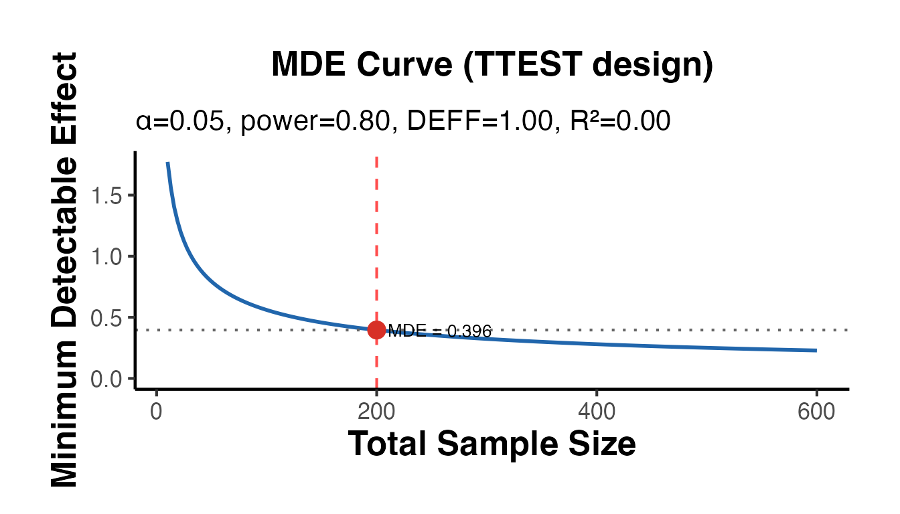
# DiD design MDE - note DiD requires ~2x the sample for the same precision
mde_did <- causalverse::mde_calc(
n = 500,
design = "did",
sd = 1,
alpha = 0.05,
power = 0.80,
r2 = 0.3, # 30% variance explained by pre-treatment covariates
plot = TRUE
)
cat("MDE (DiD, n=500, R2=0.3):", round(mde_did$mde, 4), "\n")
#> MDE (DiD, n=500, R2=0.3): 0.2965
cat("Effective N after DEFF: ", round(mde_did$effective_n, 1), "\n")
#> Effective N after DEFF: 500
mde_did$plot + causalverse::ama_theme()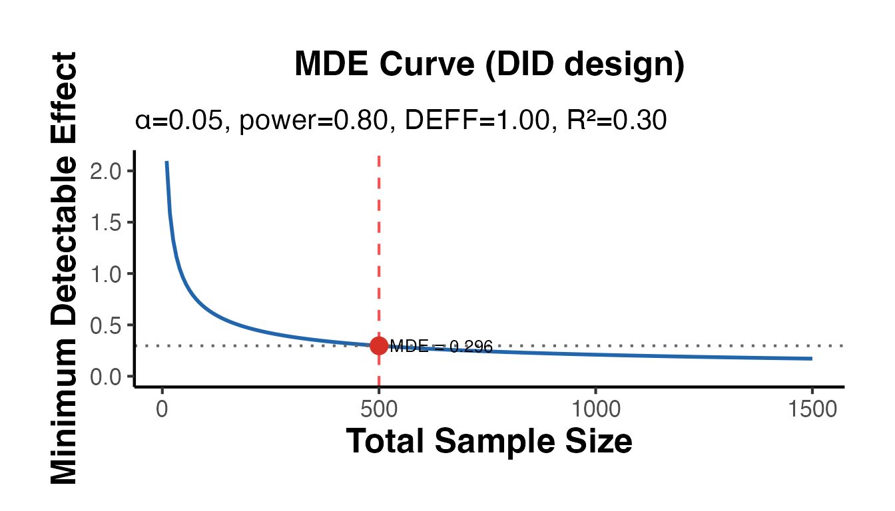
# Clustered trial: ICC inflates required sample
mde_cluster <- causalverse::mde_calc(
n = 500,
design = "cluster",
icc = 0.05,
cluster_size = 25,
plot = TRUE
)
cat("MDE (clustered, ICC=0.05, m=25):", round(mde_cluster$mde, 4), "\n")
#> MDE (clustered, ICC=0.05, m=25): 0.3717
cat("Design effect (DEFF): ", round(mde_cluster$design_effect, 3), "\n")
#> Design effect (DEFF): 2.2
mde_cluster$plot + causalverse::ama_theme()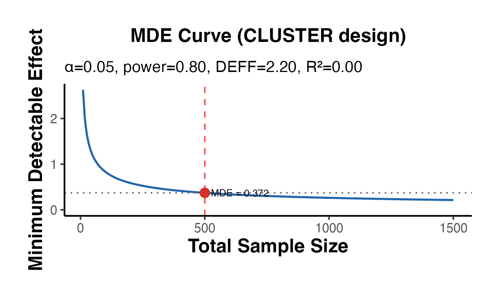
DiD Power Analysis with did_power_analysis()
did_power_analysis() extends mde_calc() for DiD-specific designs, incorporating serial autocorrelation and multi-period panels.
# Two-period DiD: solve for power given a small treatment effect
pwr_did <- causalverse::did_power_analysis(
n_treated = 100,
n_control = 200,
effect_size = 0.3,
sd_outcome = 1,
n_periods = 2,
pre_periods = 1,
alpha = 0.05,
plot = TRUE
)
cat("=== DiD Power Analysis ===\n")
#> === DiD Power Analysis ===
cat("N treated:", pwr_did$n_treated, "| N control:", pwr_did$n_control, "\n")
#> N treated: 100 | N control: 200
cat("Effect size:", pwr_did$effect_size, "| SE:", round(pwr_did$se_did, 4), "\n")
#> Effect size: 0.3 | SE: 0.1225
cat("Power:", round(pwr_did$power, 3), "\n")
#> Power: 0.688
pwr_did$plot + causalverse::ama_theme()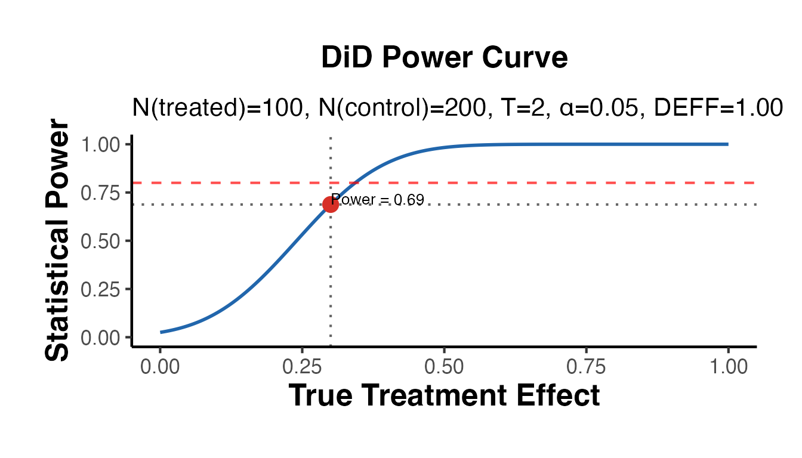
# Multi-period panel with serial autocorrelation (reduces effective N)
pwr_did_ar <- causalverse::did_power_analysis(
n_treated = 50,
n_control = 100,
effect_size = 0.4,
sd_outcome = 1,
n_periods = 8,
pre_periods = 4,
rho = 0.4, # moderate autocorrelation
alpha = 0.05,
plot = TRUE
)
cat("Power (with autocorrelation rho=0.4):", round(pwr_did_ar$power, 3), "\n")
#> Power (with autocorrelation rho=0.4): 0.659
cat("Design effect:", round(pwr_did_ar$design_effect, 3), "\n")
#> Design effect: 3.8
pwr_did_ar$plot + causalverse::ama_theme()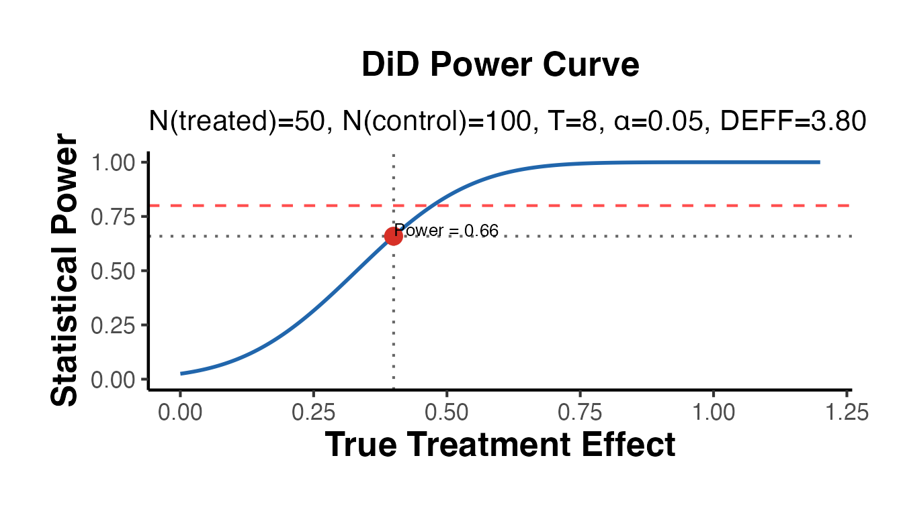
# Solve for MDE given a fixed sample
mde_did_pa <- causalverse::did_power_analysis(
n_treated = 100,
n_control = 100,
n_periods = 4,
pre_periods = 2,
solve_for = "mde",
plot = FALSE
)
cat("MDE (DiD, N=100+100, T=4):", round(mde_did_pa$mde, 4), "\n")
#> MDE (DiD, N=100+100, T=4): 0.2802Power Curves: Comparing Designs
set.seed(42)
# Grid of sample sizes
n_grid <- seq(20, 600, by = 20)
effect <- 0.25 # target effect size (Cohen's d)
# Compute power for t-test and DiD across sample sizes
power_ttest <- vapply(n_grid, function(n) {
res <- causalverse::did_power_analysis(
n_treated = floor(n / 2), n_control = n - floor(n / 2),
effect_size = effect, sd_outcome = 1,
n_periods = 2, pre_periods = 1,
plot = FALSE, solve_for = "power"
)
res$power
}, numeric(1))
power_did <- vapply(n_grid, function(n) {
res <- causalverse::did_power_analysis(
n_treated = floor(n / 2), n_control = n - floor(n / 2),
effect_size = effect, sd_outcome = 1,
n_periods = 6, pre_periods = 3,
rho = 0.3,
plot = FALSE, solve_for = "power"
)
res$power
}, numeric(1))
power_df <- data.frame(
n = rep(n_grid, 2),
power = c(power_ttest, power_did),
design = rep(c("2-period DiD (rho=0)", "6-period DiD (rho=0.3)"), each = length(n_grid))
)
ggplot(power_df, aes(x = n, y = power, color = design, linetype = design)) +
geom_line(linewidth = 1.1) +
geom_hline(yintercept = 0.80, linetype = "dashed", color = "gray40") +
annotate("text",
x = max(n_grid) * 0.95, y = 0.82,
label = "80% power", hjust = 1, size = 3.2, color = "gray40"
) +
scale_y_continuous(limits = c(0, 1), labels = scales::percent_format()) +
scale_color_manual(values = c("#2166AC", "#D73027")) +
labs(
title = "Power Curves: DiD Designs Compared",
subtitle = paste0("True effect size = ", effect, " SD units"),
x = "Total Sample Size",
y = "Statistical Power",
color = "Design",
linetype = "Design"
) +
causalverse::ama_theme() +
theme(legend.position = "bottom")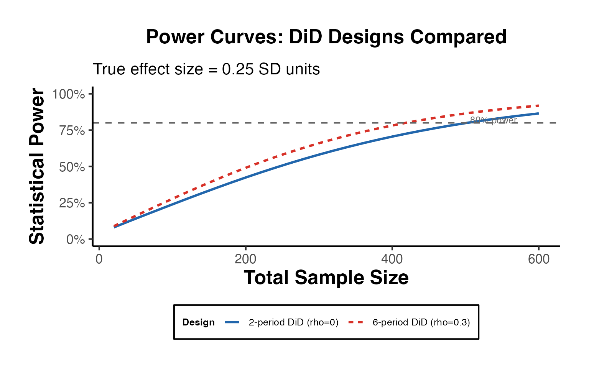
Treatment Calendar and Staggered Adoption Summary
These two functions are essential for communicating the structure of staggered adoption designs to readers and reviewers.
Treatment Calendar
# Prepare base_stagg with a proper binary treatment indicator
df_stagg_intro <- fixest::base_stagg |>
dplyr::mutate(
treatment = as.integer(time_to_treatment >= 0 & year_treated <= 7)
)
causalverse::treatment_calendar(
data = df_stagg_intro,
unit_var = "id",
time_var = "year",
treat_var = "treatment",
max_units = 50,
title = "Staggered Adoption: Treatment Timing Calendar"
) + causalverse::ama_theme(base_size = 10)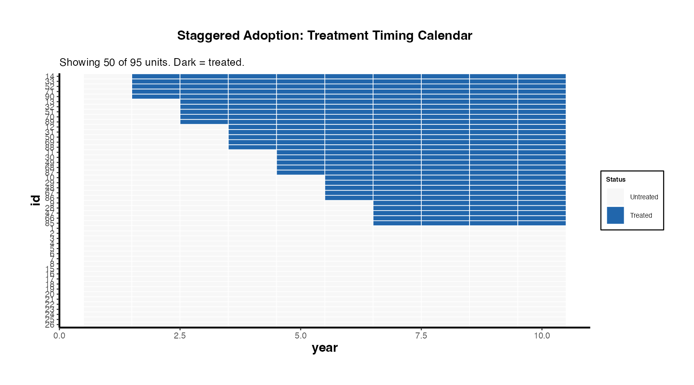
Staggered Summary
summ_intro <- causalverse::staggered_summary(
data = df_stagg_intro,
unit_var = "id",
time_var = "year",
treat_var = "treatment",
plot = TRUE
)
cat("=== Staggered Design Summary ===\n")
#> === Staggered Design Summary ===
cat(summ_intro$message, "\n\n")
#> Staggered design: 95 units, 10 periods (1-10), 6 cohorts, 65 never-treated.
cat("Cohort sizes:\n")
#> Cohort sizes:
print(summ_intro$cohort_sizes)
#> first_treat_period n_units share
#> 1 2 5 0.0526
#> 2 3 5 0.0526
#> 3 4 5 0.0526
#> 4 5 5 0.0526
#> 5 6 5 0.0526
#> 6 7 5 0.0526
summ_intro$cohort_plot + causalverse::ama_theme()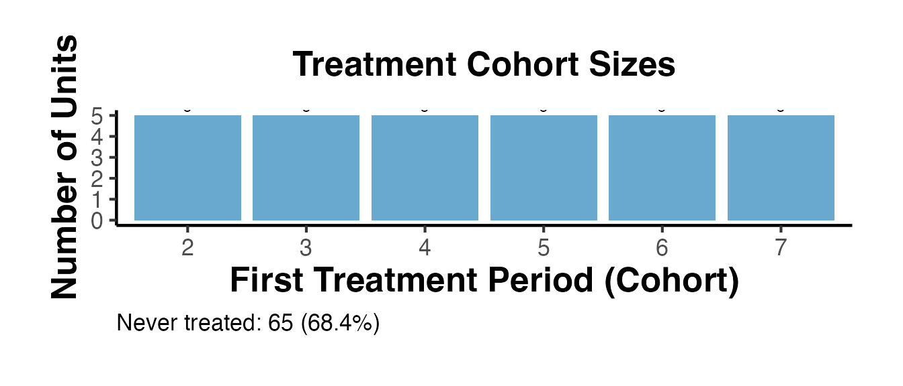
Effect Size Reporting for Publications
Converting a Regression Coefficient
A common reporting challenge is translating regression coefficients into effect sizes that non-specialist readers can interpret.
# Suppose a DiD estimate shows wages increase by $2,800 (SD = $12,000)
causalverse::effect_size_convert(
value = 2800,
from = "unstd",
sd_outcome = 12000,
to = c("cohens_d", "pct_change", "nnt"),
baseline_risk = 0.30,
verbose = TRUE
)
#> Effect size conversion: from unstd = 2800
#>
#> Cohen's d = 0.2333 (small effect)
#> Percent change = 23.33%
#> NNT = 9.4 (treat 9.4 people to prevent 1 event)Publication Table Workflow
# Typical research table comparing multiple specifications
data(mtcars)
set.seed(123)
spec1 <- lm(mpg ~ am, data = mtcars)
spec2 <- lm(mpg ~ am + wt, data = mtcars)
spec3 <- lm(mpg ~ am + wt + hp, data = mtcars)
pub_tbl <- causalverse::causal_table(
models = list(
"(1) Baseline" = spec1,
"(2) + Weight" = spec2,
"(3) + Power" = spec3
),
coef_map = c(
am = "Automatic to Manual",
wt = "Weight (1000 lbs)",
hp = "Horsepower"
),
title = "Treatment Effect of Manual Transmission on Fuel Efficiency",
notes = "Dependent variable: miles per gallon. OLS estimates. * p<0.1, ** p<0.05, *** p<0.01.",
output_format = "dataframe"
)
print(pub_tbl)
#> part term statistic (1) Baseline (2) + Weight (3) + Power
#> 1 estimates Automatic to Manual estimate 7.245*** -0.024 2.084
#> 2 estimates Automatic to Manual std.error (1.764) (1.546) (1.376)
#> 3 estimates Weight (1000 lbs) estimate -5.353*** -2.879***
#> 4 estimates Weight (1000 lbs) std.error (0.788) (0.905)
#> 5 estimates Horsepower estimate -0.037***
#> 6 estimates Horsepower std.error (0.010)
#> 7 gof Num.Obs. 32 32 32
#> 8 gof R2 0.360 0.753 0.840
#> 9 gof R2 Adj. 0.338 0.736 0.823The coefficient on am shrinks substantially once we control for weight, illustrating the importance of covariate adjustment in observational settings.
Putting It All Together: A Complete Workflow
The following sketch outlines a typical end-to-end causal inference workflow using causalverse:
-
Visualize raw data with
plot_trends_across_group()ortreatment_calendar(). -
Describe the sample with
covariate_summary()(Table 1). -
Assess balance with
balance_table()orlove_plot(). - Estimate the treatment effect using the appropriate method (DiD, RD, IV, SynthDID, Matching).
-
Inspect diagnostics with
test_pretrends(),rd_bandwidth_sensitivity(), oriv_diagnostic_summary(). -
Quantify uncertainty with appropriate SE methods and
tidy_causal(). -
Check robustness with
spec_curve(),sensitivity_plot(), orplacebo_test(). -
Compute power retrospectively with
mde_calc()ordid_power_analysis(). -
Report with
causal_table()andeffect_size_convert().
Each step has dedicated causalverse functions, and the method-specific vignettes walk through complete examples for each design type.